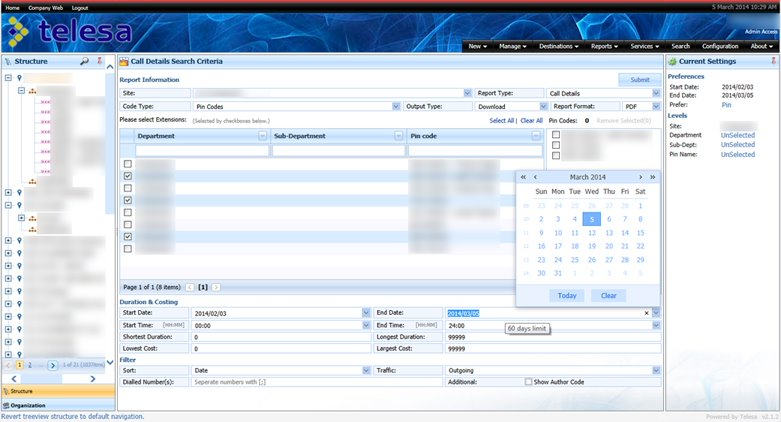
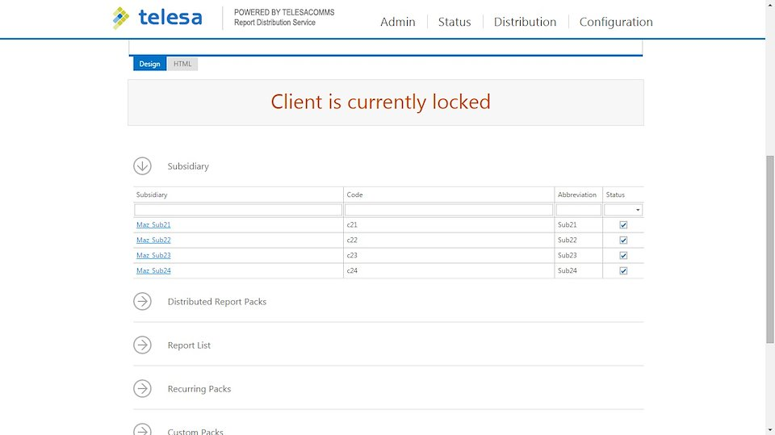
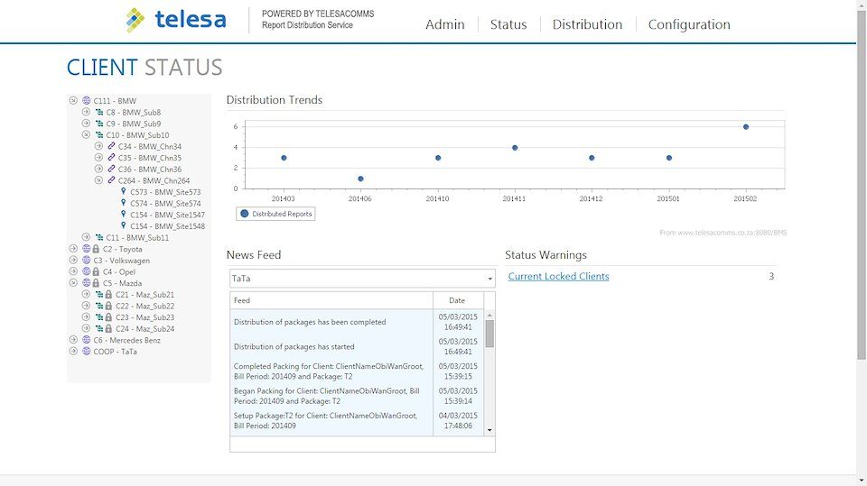
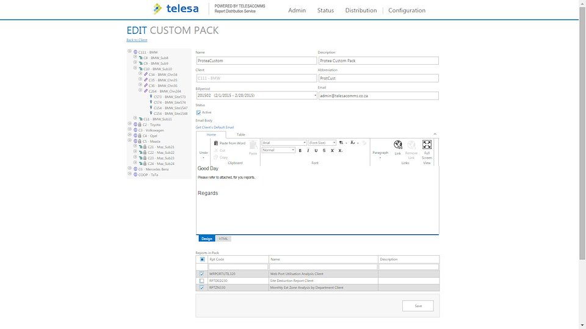
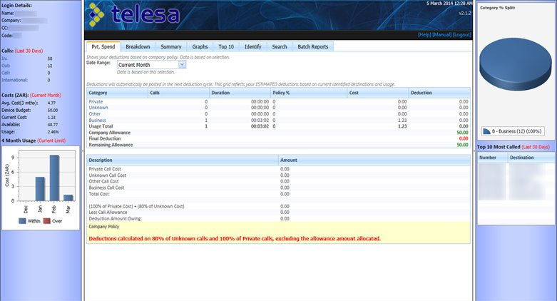

-

- 
-

- 
- 
- 
-

- 
Due to signed non-disclosure agreements, no intellectual property can be disclosed.
The following screenshots were of a homemade redesign and rewrite, with fake/redacted data, while withholding proprietary information.
The majority of sub-systems were already established, when I was hired to update the visuals and eventually move on to becoming the lead developer.
Throughout my time working within the systems, I developed innovative methods for working with the static and (at the time) rigid cookie cutter DevExpress components.
Along with recreating entire clones of the full suite, using SignalR and KnockoutJS. Writing an entire drag and drop teeview hierarchy, with full CRUD implementation and cascading controls.
The core consept for all the sub-systems, were to facilitate the communications billing and management of any orginisational Private Branch Exchange (PBX).
The TMS system was developed to consolidate and clean all the data formats that each type of PBX export. Along with the steady stream of realtime logging, this system also allowed admins only access to low level PBX features, such as call blocking, extension reallocation and so on.
The UMS system was more geared to each individual that might be incorrectly getting deducted for personal calls, making admin requests with complete sign off process and other personalised tracking purposes.
The BMS system was developed with the accountants in mind, with complete auditing services, back-dated usage history and tax ratings.
The RMS/RDS system was designed to enable custom reporting, to automatically track the sub-systems usages, fromt the top down hierarchy of the business, dependant on user role requirements.